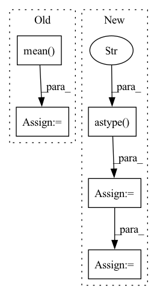

Pattern ID :16500

Before Change
def generate_order(stock: str, start_idx: int, end_idx: int) -> None:
df = pd.read_pickle(DATA_PATH / f"{stock}.pkl")
df = df.groupby("date").take(range(start_idx, end_idx)).droplevel(level=0)
div = df["$volume0"].rolling((end_idx - start_idx) * 60).mean().shift(1).groupby(level="date").transform("first")
order_all = pd.DataFrame(df.groupby(level=(2, 0)).mean().dropna())
order_all["amount"] = np.random.lognormal(-3.28, 1.14) * order_all["$volume0"]
After Change
if len(df) == 0 or df.isnull().values.any() or min(df["$volume0"]) < 1e-5:
return False
df["date"] = df["datetime"].dt.date.astype("datetime64")
df = df.set_index(["instrument", "datetime", "date"])
df = df.groupby("date").take(range(start_idx, end_idx)).droplevel(level=0)
order_all = pd.DataFrame(df.groupby(level=(2, 0)).mean().dropna())
In pattern: SUPERPATTERN
Frequency: 3
Non-data size: 5
Instances
Fragment ID: 55454910
Project Name: microsoft/qlib
Commit Name: 7f1e8c52063e92cfcd11228255c2a0cb44798a90
Time: 2023-04-26
Author: huoranli@microsoft.com
File Name: examples/rl_order_execution/scripts/gen_training_orders.py
M Class Name: AnonimousClass
N Class Name: AnonimousClass
M Method Name: generate_order(3)
N Method Name: generate_order(3)
M Parent Class:
N Parent Class:
M File Name: examples/rl_order_execution/scripts/gen_training_orders.py
N File Name: examples/rl_order_execution/scripts/gen_training_orders.py
M Start Line: 15
M End Line: 17
N Start Line: 15
N End Line: 40
'>
Before Change
ic = pred_label.groupby(level="datetime").apply(lambda x: x["label"].corr(x["score"]))
_index = ic.index.get_level_values(0).astype("str").str.replace("-", "").str.slice(0, 6)
_monthly_ic = ic.groupby(_index).mean()
_monthly_ic.index = pd.MultiIndex.from_arrays(
[_monthly_ic.index.str.slice(0, 4), _monthly_ic.index.str.slice(4, 6)],
names=["year", "month"],
)
After Change
)
_ic = ic_df.iloc(axis=1)[0]
_index = _ic.index.get_level_values(0).astype("str").str.replace("-", "").str.slice(0, 6)
_monthly_ic = _ic.groupby(_index).mean()
_monthly_ic.index = pd.MultiIndex.from_arrays(
[_monthly_ic.index.str.slice(0, 4), _monthly_ic.index.str.slice(4, 6)],
names=["year", "month"],
'>
Fragment ID: 55454908
Project Name: microsoft/qlib
Commit Name: 2f5ce3dc01e6209520bd0d9bda52ed6d0188398e
Time: 2022-12-30
Author: qianyun210603@hotmail.com
File Name: qlib/contrib/report/analysis_model/analysis_model_performance.py
M Class Name: AnonimousClass
N Class Name: AnonimousClass
M Method Name: _pred_ic(2)
N Method Name: _pred_ic(2)
M Parent Class:
N Parent Class:
M File Name: qlib/contrib/report/analysis_model/analysis_model_performance.py
N File Name: qlib/contrib/report/analysis_model/analysis_model_performance.py
M Start Line: 113
M End Line: 161
N Start Line: 120
N End Line: 187
'>
Before Change
def masked_mape_np(y_true, y_pred, null_val=np.nan):
with np.errstate(divide="ignore", invalid="ignore"):
mask = mask_np(y_true, null_val)
mask /= mask.mean()
mape = np.abs((y_pred - y_true) / y_true)
mape = np.nan_to_num(mask * mape)
return np.mean(mape) * 100
After Change
mask = ~np.isnan(y_true)
else:
mask = np.not_equal(y_true, null_val)
mask = mask.astype("float32")
mask /= np.mean(mask)
mape = np.abs(np.divide(np.subtract(y_pred, y_true).astype("float32"),
y_true))
mape = np.nan_to_num(mask * mape)
'>
Fragment ID: 55454918
Project Name: guoshnbjtu/astgcn-r-pytorch
Commit Name: 768732e80a5816fe2a034afd5537a462ef7e3851
Time: 2020-01-06
Author: guoshn@bjtu.edu.cn
File Name: lib/metrics.py
M Class Name: AnonimousClass
N Class Name: AnonimousClass
M Method Name: masked_mape_np(3)
N Method Name: masked_mape_np(3)
M Parent Class:
N Parent Class:
M File Name: lib/metrics.py
N File Name: lib/metrics.py
M Start Line: 15
M End Line: 17
N Start Line: 8
N End Line: 15